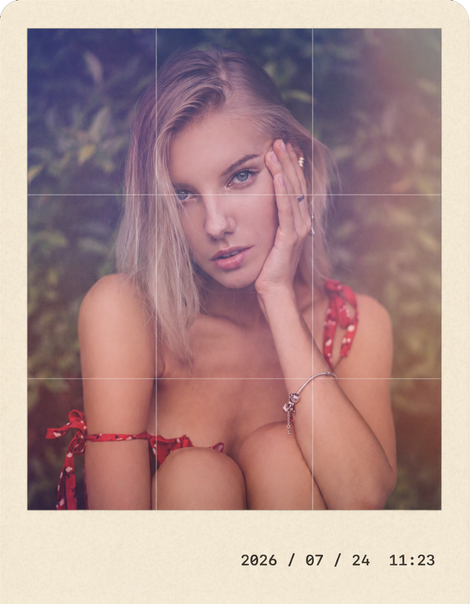
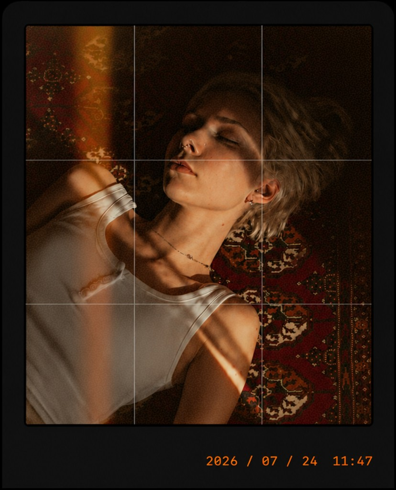
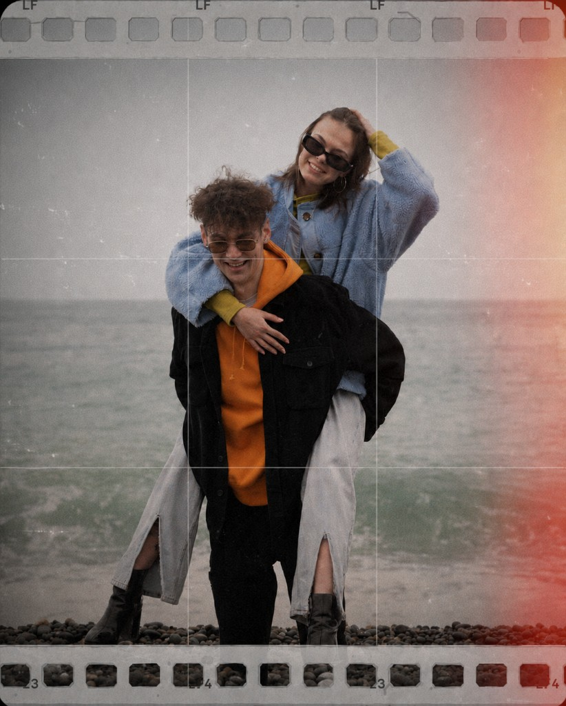
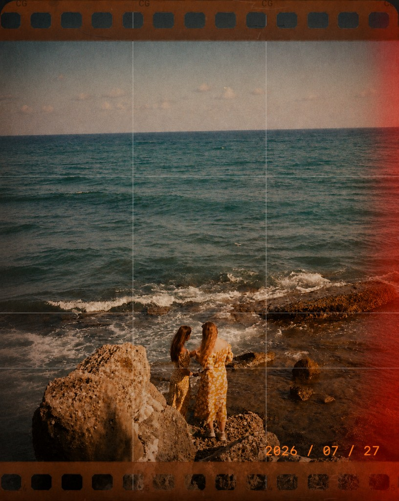
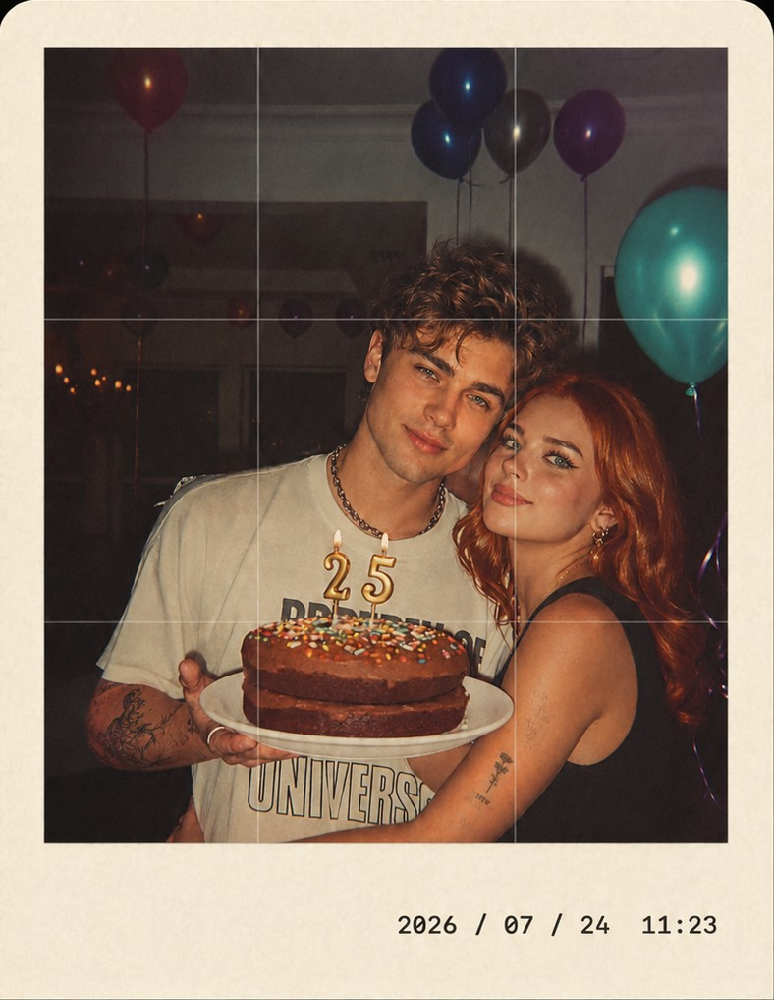
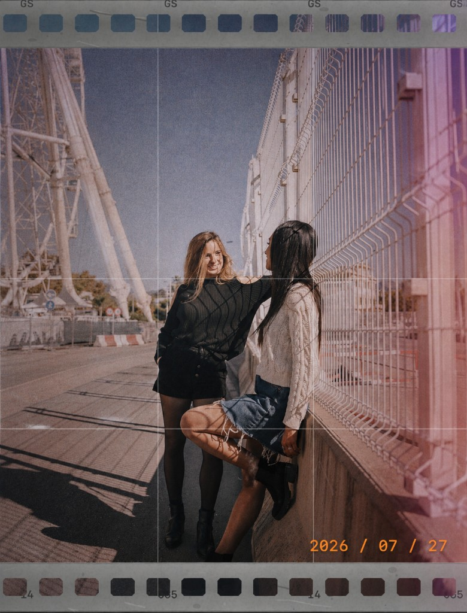
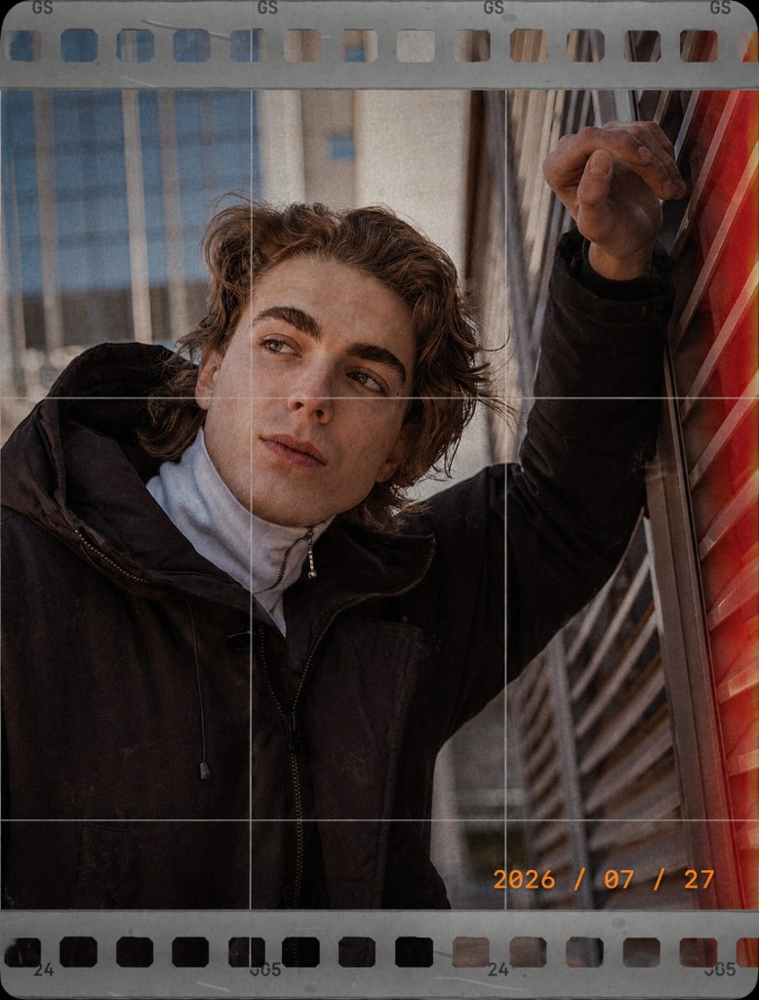
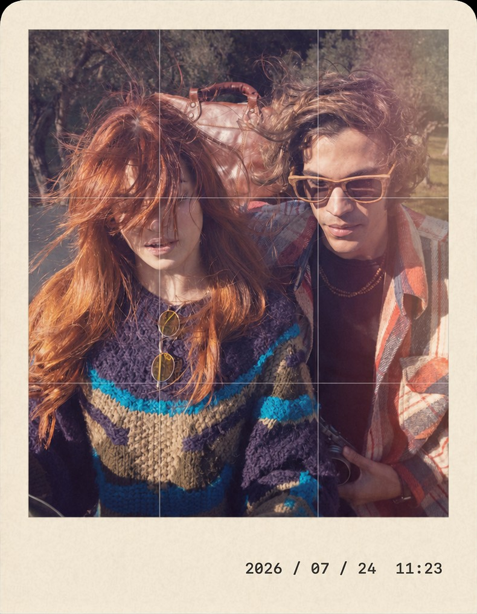

Live film looks
Grain, glow, vignette and color profiles apply in real time in the viewfinder — no detour through another editor.
Film camera for iPhone
Capture photos and videos with the timeless look of film and Polaroid — grain, glow, frames and looks previewed live in the viewfinder.
Interactive demo
Upload a photo, open your device camera, or pick a sample. Filters and frames are for demonstration only — the full experience lives in the app.
Demo preview · Not the full app experience
Inside the app
Shoot in photo or video mode and see the final look before you press the shutter.
Grain, glow, vignette and color profiles apply in real time in the viewfinder — no detour through another editor.
Explore film collections, decorative frames and retro-inspired Video FX that feel made for everyday shots.
Tune exposure, white balance, grain, blur and noise intensity so each look matches your style.
Add text to the frame, use an icon, or show city and country automatically — a small mark for each moment.
Core camera features and a starter collection of styles are available from the start.
Additional profiles, expanded framing options and advanced recording settings unlock with a subscription.
Gallery
From city walks to short evening videos — a nostalgic atmosphere, ready in the viewfinder.








Vintage Camera for iPhone — photo and video with classic looks, frames and live preview.
Get on the App StoreWe care about your privacy. Read the Privacy Policy for how Vintage Camera uses camera, microphone, photos and location on your device.